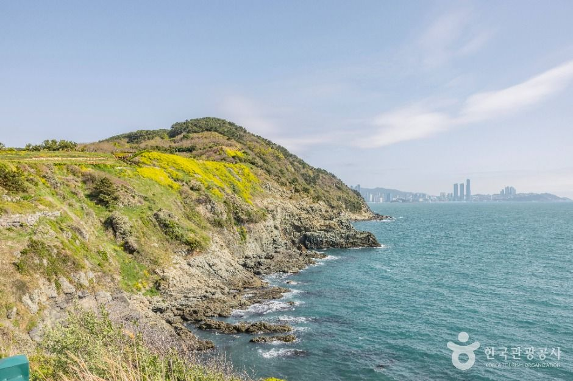
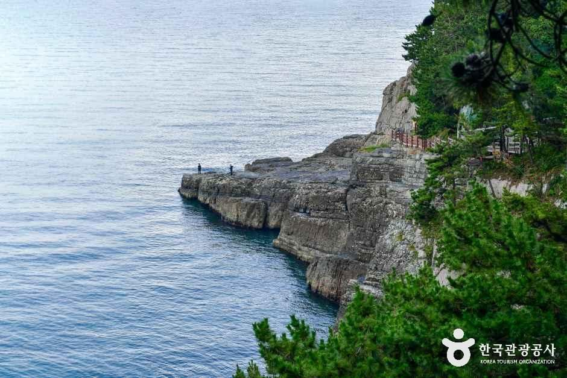
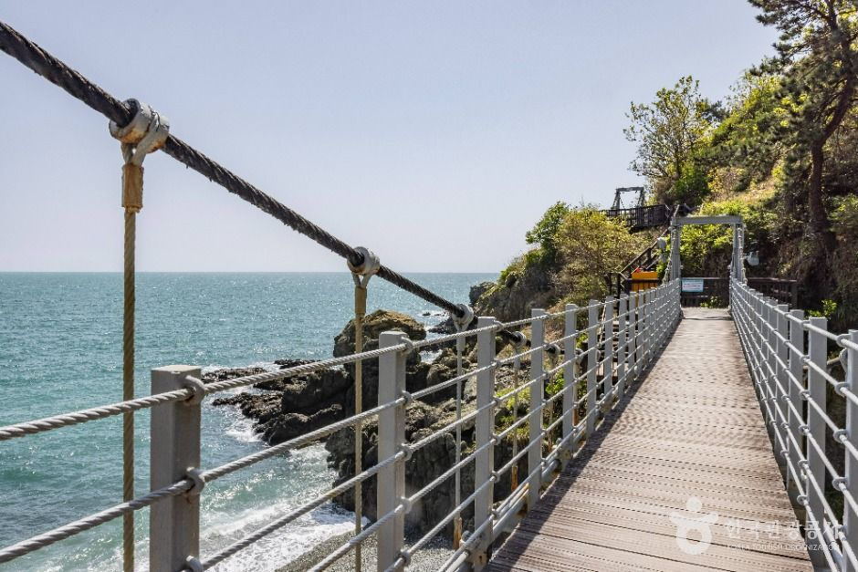
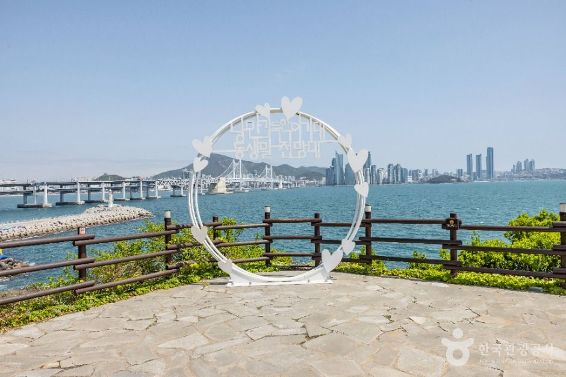
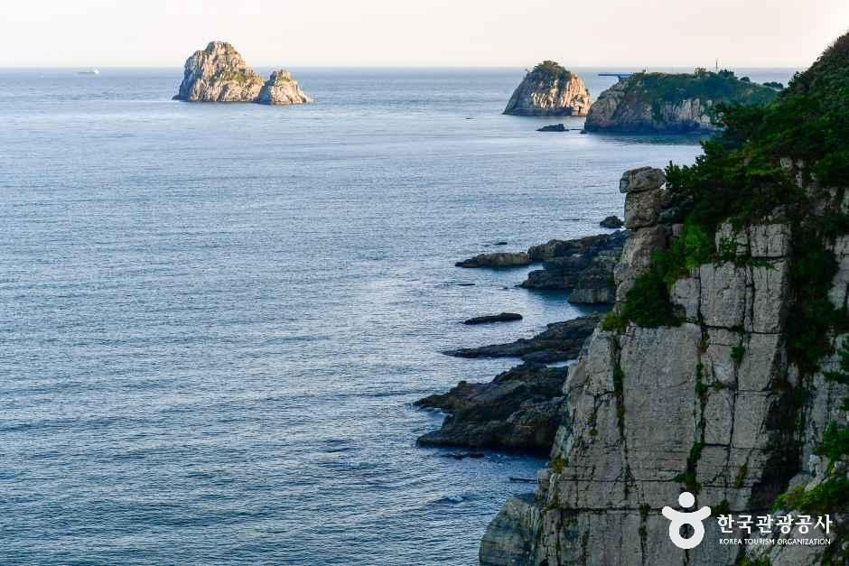

Igidae Coastal Trail Busan Guide: Overview
This Igidae Coastal Trail Busan guide covers one of the city's best-loved cliff walks. Igidae is a 2 km line of cliffs and flat rock platforms on the east side of Jangsanbong in Nam-gu, facing Gwangan Bridge, Marine City and Haeundae across the water. A wooden-deck trail follows the coast for about 4.7 km from Dongsaengmal to the Oryukdo Skywalk and Oryukdo Quay, with suspension bridges, viewpoints and the Oryukdo islets at the end.
The area was a military zone closed to the public until 1993, which is why the forest and rocks are still so wild this close to the city. It is part of the Busan National Geopark. This guide covers the route, the skywalk hours, how to get there and which end to start from. We checked the details against Korea Tourism Organization (KTO) data, Visit Busan, Busan's geopark office and Nam-gu's official tourism pages.
"Cliffs and surf on one side, Busan's skyline on the other. The best free half-day walk in the city."

Name, History and Geology
The name means "terrace of two gisaeng". Visit Busan tells the local story: during the Japanese invasion of the 1590s, two gisaeng (female entertainers) from Suyeong were taken to a victory feast and jumped into the sea with a drunken Japanese commander. The coast was later closed for military use and opened to the public in 1993.
Busan's geopark office says the rocks are volcanic and sedimentary layers from andesite eruptions about 80 million years ago. Waves have cut them into sea cliffs, wave-cut platforms and sea caves, and along the trail you can spot potholes, an old copper mine and dark igneous dykes. The water is clear enough that the rocks are a popular fishing spot.

The Trail: Dongsaengmal to Oryukdo
The trail starts at Dongsaengmal, just below the Igidae viewpoint, with a head-on view of Gwangan Bridge. It then crosses an overpass to Eoulmadang ("Global Gathering"), a sunset spot used as a location in the 2009 film Haeundae. From there the deck rises and falls along the cliffs past Chimabawi and Nongbawi rocks, and crosses a 127 m suspension bridge made of five short spans.
After the last hill you reach Oryukdo Sunrise Park and the Oryukdo Skywalk, a horseshoe of 24 glass panels about 15 m long, set on a cliff 35 m above the sea. The Oryukdo islets sit just offshore. The trail ends at Oryukdo Quay, which is also where the 750 km Haeparang Trail to Goseong begins.


Visitor Information
| Item | Details |
|---|---|
| Location | Yongho-dong, Nam-gu, Busan; Igidae Park entrance 68 Igidae-gongwon-ro (부산광역시 남구 이기대공원로 68) |
| Trail | About 4.7 km, Dongsaengmal → Eoulmadang → Nongbawi → Oryukdo Sunrise Park → Oryukdo Quay; about 2.5 hours one way |
| Hours | Trail open all year, 24 hours; night walking not advised |
| Entry | Free (trail and skywalk) |
| Oryukdo Skywalk | 09:00–18:00 Oct–May; 09:00–19:00 Jun–Sep; last entry 10 min before closing; from 12:00 on Seollal and Chuseok; closed in rain, snow and strong wind |
| Phone | Nam-gu Office parks team +82-51-607-4544; Busan Travel Hotline 1330 |
| Bus | Metro Line 2 Kyungsung Univ.·Pukyong Nat'l Univ. Station, then city bus 24, 27 or 131 to Oryukdo Skywalk (last stop), or village bus Nam-gu 2 / Nam-gu 8 toward Igidae |
| Parking | Igidae public car park (paid) |
Sources: Korea Tourism Organization data for Igidae (이기대) and the Igidae coastal walk; Visit Busan's Igidae Coastal Trail page; Busan Geopark's Igidae page; Nam-gu Office tourism page and Nam-gu Facilities Management Corporation (Oryukdo Skywalk hours). Photos © Korea Tourism Organization (KOGL Type 1, attribution), unmodified. No AI-generated images.

Getting There and Which End to Start
Take Busan Metro Line 2 to Kyungsung Univ.·Pukyong Nat'l Univ. Station and leave by exit 5. For the Oryukdo end, city buses 24, 27 and 131 run to their last stop, Oryukdo Skywalk. For the Dongsaengmal end, Visit Busan lists the Nam-gu 2 and Nam-gu 8 village buses toward Igidae; you can also take a short taxi ride from the station. Bus routes change, so check KakaoMap or Naver Map on the day.
Start at Oryukdo if you want the skywalk while it is open and the city skyline growing in front of you, ending near Gwangalli for dinner and the bridge lights. Start at Dongsaengmal if you prefer to finish with the open sea and the islets, but leave enough time to reach the skywalk before it closes.
Tips for Walking Igidae
- Wear proper shoes: the trail is mostly deck and stairs with many ups and downs, not a flat promenade.
- Bring water and snacks: there are few shops between the two ends, and Visit Busan suggests pacing yourself on the climbs.
- Go in daylight: the trail is open at night, but the geopark office asks visitors to avoid it after dark.
- Check the weather: the skywalk closes in rain, snow and strong wind, and wet rocks are slippery.
- Respect the sanctuary: part of the coast is a marine protected area, so don't take shells, plants or animals.
How It Compares with Other Busan Coastal Walks
| Igidae Coastal Trail | Taejongdae | Haeundae Blueline Park | |
|---|---|---|---|
| What it is | Cliff deck trail with suspension bridges | Forest headland loop with lighthouse | Seaside rail path with sky capsules |
| Best for | Skyline views and a real coastal hike | Sea cliffs and a lighthouse visit | An easy, flat seaside stroll |
| Effort | Moderate; many stairs | Easy to moderate; shuttle bus Wed–Sun | Easy |
| Cost | Free | Free | Walking free; trains and capsules paid |
| Time needed | 2–3 hours | About 3 hours | 1–2 hours |
Who It Suits
- Great for: Walkers who want sea cliffs and Busan's skyline in the same view.
- Great for: Photographers at sunset, when Gwangan Bridge lights up across the bay.
- Great for: Budget travellers, since the trail and skywalk are both free.
- Less ideal: Visitors with limited mobility or strollers; the trail has many steps (the skywalk entrance is wheelchair accessible, the glass section is not).
- Less ideal: Rainy or windy days, when the decks are slippery and the skywalk closes.
Plan Your Busan Trip
Igidae Coastal Trail FAQ
Where is the Igidae Coastal Trail?
Igidae (이기대) is a stretch of cliffs and rock platforms in Yongho-dong, Nam-gu, Busan, across the bay from Gwangalli and Haeundae. The coastal trail runs from Dongsaengmal near Gwangan Bridge to Oryukdo Sunrise Park and Oryukdo Quay at the southern tip.
How long is the Igidae Coastal Trail?
Visit Busan puts the full trail at 4.7 km from Dongsaengmal to Oryukdo Quay, about 2.5 hours on foot. Busan's geopark office lists 3.95 km and about 2 hours, measured from Eoulmadang. It is part of Busan Galmaetgil route 2-2 and the start of the Haeparang Trail.
Is Igidae free and open at night?
The trail is free and open all year, 24 hours a day. Busan's geopark office asks visitors not to walk it at night for safety, since the path has many steps and sits on cliff edges.
What are the Oryukdo Skywalk hours?
The glass Oryukdo Skywalk at the end of the trail is free. Nam-gu's facilities agency opens it 09:00–18:00 from October to May and 09:00–19:00 from June to September, with last entry 10 minutes before closing, and from 12:00 on Seollal and Chuseok. It closes in rain, snow and strong wind.
How do I get to Igidae by public transport?
Take Busan Metro Line 2 to Kyungsung Univ.·Pukyong Nat'l Univ. Station. For the Oryukdo end, take city bus 24, 27 or 131 to the last stop (Oryukdo Skywalk). For Dongsaengmal, Visit Busan lists village buses Nam-gu 2 and Nam-gu 8; check current routes before you go.